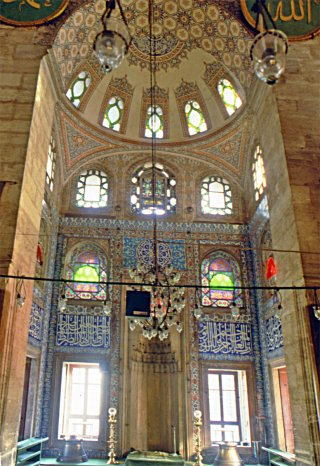

Kılıç Ali Paşa Camii
Açıklamaİstanbul Tophane’de Kaptanıderyâ Kılıç Ali Paşa’nın (ö. 995/1587) kurduğu külliye, aslında deniz kıyısında ve İstanbul Limanı’ndaki gemilerden Beyoğlu tarafına çıkışı sağlayan en önemli iskelenin başında bulunuyordu. Külliye, dış avlu duvarıyla çevrili bir cami ile yanındaki büyük bir medrese ve tek hamamdan oluşmuştur. Caminin kıble tarafında kurucusunun türbesinden başka bir de hazîre yer almaktadır. Külliyeyi çevreleyen avlu duvarının cadde üzerindeki köşesinde günümüzde bir sebil varsa da bu muhtemelen külliyenin bir unsuru değildir. Kılıç Ali Paşa’nın bu külliyesi dışında Haliç kıyısında Fener İskelesi yakınında bugün hiçbir izi kalmayan bir çifte hamamı, Hadîkatü’l-cevâmi‘de verilen bilgiye göre Beşiktaş’ta ayrıca bir mescidi ile Yenisaray’da başka bir hamamı olduğu nakledilmektedir, ancak Yenisaray adında bir hata olabilir. Beşiktaş’taki mescidi Nevşehirli Damad İbrâhim Paşa tarafından ihya edilmişse de II. Mahmud döneminde tamamen yıkılarak yerine Âsâriye adıyla büyük bir cami yapılmıştır.Cami. Kitâbesine göre külliyenin kurucusu Kılıç Ali Paşa’dır ve Mimar Sinan’ın eserlerini bildiren çeşitli tezkirelerden anlaşıldığına göre bu ünlü mimar tarafından inşa edilmiştir. Caminin cümle kapısı üstünde yer alan, şair Ulvî’nin yazdığı tarih kitâbesindeki, “Cehd edip yaptı bu zîbâ câmii / Şîr-i meydan ol Ali Pâşâ benam / Ehl-i diller dediler târîhini / Oldu a‘lâ câmiin Beytülharam” mısraları yapının 988’de (1580) tamamlandığını gösterir. Evliya Çelebi, XVII. yüzyılın ilk yarısında İstanbul’u anlatırken bir selâtin camii hüviyetindeki mâbed için, “İstanbul’da başka bir benzeri yoktur” diyerek yapının Ayasofya’ya benzediğine işaretle mimarisi, iç süslemesiyle mefruşatı hakkında bilgi verir. İstanbul’un en eski görüntülerini resimleyen Robertson’un 1855’e doğru çektiği bir fotoğrafta caminin minaresinin iskele kurularak gövdenin ortalarından itibaren yenilendiği görülmekte, bundan da minarenin bilinmeyen bir sebepten dolayı yıkıldığı anlaşılmaktadır. Renkli cam alçı pencerelerden birinde, bunların 1331’de (1913) Bursalı Tevfik adında bir usta tarafından yapıldığını bildiren bir imza yer almaktadır. Üç tarafa açılan girişlere sahip, kesme taştan yapılmış pencereli avlu duvarı orijinal şekliyle kalmamıştır. Evvelce bu duvar bir dikdörtgeni sınırlarken 1956’larda Tophane Meydanı tarafındaki cephesi şevli biçimde türbeye doğru alınmıştır. Duvar şadırvan tarafında da geri çekilmiştir. Caminin giriş kısmında üzeri kurşun kaplı, öne meyilli bir çatı ile örtülü, mermer sütunlara dayanan ikinci bir son cemaat yeri vardır. Sonradan büyütülmesi gerektiği anlaşılan bu kısımdaki sütun başlıklarının klasik üslûpta oluşu buranın binanın inşasıyla beraber yapıldığını veya az sonra eklendiğini gösterir. Kılıç Ali Paşa Camii’nin esas son cemaat yeri sütunlara dayanan kemerlerin taşıdığı beş kubbe ile örtülüdür. Caminin harimi, yapının Ayasofya’nın mimari düzeninin bir benzerine sahip olduğunu göstermektedir. Kılıç Ali Paşa Camii’nde Sinan, uzun meslek hayatının son büyük eserlerinden olmasına rağmen çok daha küçük ölçüde Ayasofya’nın planını ve Osmanlı dönemi Türk mimarisinin unsurlarını kullanarak şaşırtıcı bir uygulama ortaya koymuştur. Esas cami mekânı tam bir dikdörtgen biçiminde olup mihrap bir yarım kubbe ile örtülü ve ileri taşan bir çıkıntının içindedir. Ayrıca girişe yakın olarak yanlarda iki çıkıntı daha vardır. Bunlardan sağdaki, minarenin kürsü kısmıdır. Soldaki ise içindeki merdivenle harimi çeviren galeriye çıkışı sağlar. Esas mekânda hâkim dört pâye yer alır. Bunların taşıdığı dört kemerin üstünde, geçişi pandantiflerle sağlanan 12,70 m. çapında pencereli ve kasnaklı bir kubbe bulunur. Mekân, kıble yönü ekseni üzerinde Ayasofya’da ve sonraları Beyazıt ve Süleymaniye camilerinde olduğu gibi iki yarım kubbe ile örtülmüştür. Yapının Ayasofya ile benzerliğini en fazla vurgulayan eleman iki yanlardaki birer çift destek payandasıdır. Burada Sinan, çok iyi incelediği Ayasofya’nın planı ile üst yapısını gerek estetik gerek statik bakımlardan daha kusursuz olarak değişik bir mimari anlayışla yorumlamıştır. Bu bakımdan Kılıç Ali Paşa Camii basit bir taklit değil Ayasofya mimarisinin geliştirilmiş, statik bakımdan çok daha güvenli bir aşamasıdır denilebilir. Yenilenen taş minarenin petek kısmına barok süslemelerle taş bir külâh yapılmışken son yıllarda minare orijinal mimarisinde olduğu gibi kurşun kaplı sivri külâhına kavuşturulmuştur. Caminin gerek son cemaat yeri gerekse içi XVI. yüzyıl İznik çinileriyle bezenmiş, mihrabın etrafı ve kıble duvarı da çinilerle kaplanmıştır. Mihrap ve minber temiz bir işçilikle beyaz mermerden işlenmiştir. Türbe. Caminin kıble tarafında ve denize daha yakın bir yerde olan kesme taştan türbe dış duvarlarıyla sekizgen biçimindedir. Üstünü genellikle türbelerin çoğunda olduğu gibi iç içe çift kubbe örter. Girişi derince bir nişin dahilinde olan türbenin içinde ise girişlerin karşısında yer alan iki sütun, giriş nişinin masif duvarlarıyla kubbeyi taşıyan kemerlere destek olmuştur. Böylece türbenin de mimarisinde benzerine pek rastlanmayan değişik bir uygulama görülür. Medrese. Kötü bir şehir planlaması sonunda külliyenin medrese ve hamam gibi unsurları XIX. yüzyılda yapılan binalarla sınırlanmıştır. Ayrıca girişin önünde zemin kodunun yükseltilmesi sonucunda medrese çukurda kalmıştır. Mimar Sinan eseri olmasına kesin gözüyle bakılan medresenin onun eserlerini bildiren tezkirelerde yer almayışı dikkat çeker. Sinan belki de bu medreseyi tasarlamış, fakat yapımı onun 1588’de ölümünden sonra bitirilmiştir. Kare planlı medrese, revaklı avlu etrafında kuzeyde olan bir tanesi giriş bölümüne ayrılmış on sekiz kubbeyle örtülü on yedi hücreden ibaretti. Ortada hazîreye doğru çıkıntı halinde büyük kubbeli dershane-mescid yer alır. Hamam gibi medrese de tuğla hatıllı, taş örgülü karma teknikte inşa edilmiştir. 1914-1915 tarihli bir kayda göre o sıralarda Kılıç Ali Paşa Medresesi kadro dışı bulunuyordu. Kılıç Ali Paşa Medresesi uzun yıllar Çocuk Esirgeme Kurumu’na devredilerek dispanser yapılmış, bu sırada büyük ölçüde değişikliklere uğramıştır. 1995’e doğru bina tahliye edilmişse de içi yapılan değişikliklerle olduğu gibi bırakılmıştır. Bakımsız ve perişan bir duruma gelen medreseyi bir vakıf restore edip kültür merkezi olarak kullanmak üzere istemişse de talep geri çevrilerek bir özel kuruluşa bırakılmak üzere kendi haline terkedilmiştir. Medrese içinde bir de kütüphane bulunmakta iken 1918 yılında kitaplar Süleymaniye Kütüphanesi’ne nakledilmiştir (bk. KILIÇ ALİ PAŞA KÜTÜPHANESİ). Hamam. Yıllar önce bir Alman dergisinde yayımlanan Osmanlı devri belgelerine dair makalede yer alan bir vesikadan hamamın 23 Muharrem 991’de (16 Şubat 1583) tamamlandığı anlaşıldığına göre külliyenin yapımı bu tarihe kadar sürmüştür. Batı tarafında girişi olan hamamın soyunma yeri (camekân) 14,10 m. çapında bir kubbe ile örtülüdür. Bu kubbeye geçiş içleri dilimli tromplarla sağlanmıştır. Duvarlar taş ve tuğla olarak karma teknikte örülmüştür. Hamam mimarisinde değişik bir sistem uygulanarak ılıklık bölümleri hemen camekânın arkasında yer almayıp yanda çok küçük mekânlar halindedir. Hamamın sıcaklık bölümü ise daha çok kaplıca mimarisinde kullanılan yuvarlak bir merkezî kısma yıldız biçiminde kemerlerle açılan tiptedir. Kılıç Ali Paşa Hamamı uzun yıllar yersiz yurtsuzların geceleri barındığı bir yer olarak kullanılmış ve bu bakımdan şehrin tarihinde özel bir yer almıştır. Hamam, Mimar Sinan’ın eserlerine dair tezkirelerde bulunduğuna göre cami ile arasında bulunan medresenin de aynı zamanda tasarlandığından şüphe edilmemelidir. Hamam daha sonraları perişanlıktan kurtarılarak bugün çalışır hale getirilmiştir. Kılıç Ali Paşa’nın ikinci hamamı, tezkirelerde Kaptan Ali Paşa Hamamı olarak kayıtlı olup Haliç kıyısında Fener mahallesindeki çifte hamamdı. Yapı bilinmeyen bir tarihte hiçbir izi kalmayacak şekilde ortadan kaldırılmıştır. Sıbyan Mektebi. Külliyenin bir de sıbyan mektebi olduğu Hadîkatü’l-cevâmi‘de bildirilmekteyse de Turgut Kut tarafından yayımlanan listeden anlaşıldığına göre 1920-1927 yıllarında burası arsa idi. Bu bakımdan yeri ve mimarisi hakkında hiçbir bilgi edinilememektedir. Sebil. Avlu duvarının cadde üzerindeki köşesinde bulunan sebilin mukarnaslı başlıklı sütunlarla ayrılan üç penceresi vardır. Bu pencerelerdeki dökme demir parmaklıklar klasik devir Türk sanatıyla bağdaşmayan bir üslûptadır. Her ne kadar sebil mimari bakımdan klasik döneme işaret etmekteyse de şebekeler herhalde XIX. yüzyıl işidir. Thomas Allom’un bir gravüründe, Tophane’nin köşesinde Kılıç Ali Paşa Camii’nin tam karşısında bir sebil bulunmaktadır. Burada Kemankeş Mustafa Paşa’nın bir sebili olduğu da bilindiğine göre gravürdeki sebil bu ikincisi olmalıdır. Sultan Abdülaziz döneminde Dolmabahçe-Tophane arasındaki cadde yeniden düzenlendiğinde güzergâha rastlayan bazı eserler yıktırılmış, bazıları kesilmiş, bazıları da yerlerinden sökülerek başka yere taşınmıştır. Bu çalışmalar sırasında Tophane köşesindeki sebilin de yerinden sökülerek karşısındaki Kılıç Ali Paşa Camii avlu duvarına bitişik olarak yeniden yapıldığına ihtimal verilebilir. Bu duruma göre sebil Kılıç Ali Paşa Külliyesi’nin bir parçası değildir. Hazîre. Caminin yan tarafında ve türbe etrafındaki hazîrede çok sayıda mezar arasında, Fındıklı sırtlarındaki Defterdar Ebülfazl ve Beyoğlu’ndaki Ağa Camii hazîrelerinden getirilen mezar taşları da yer almaktadır. Burada denizciler ve Tophane ile ilgili olarak topçularla matematikçi Hasan Fuad Paşa (ö. 1911) ve Kaptanıderyâ Ateş Mehmed Paşa’nın (ö. 1911) kabirleri de görülür.
|
|  |
|
Açılış tarihi: 1580 Mimar tarzı:Osmanlı Mimarisi Mimar:Mimar Sinan |
|
|
Adres: Kemankeş Karamustafa Paşa, Kemeraltı Cd.No:50, 34425 Beyoğlu/İstanbul |
|
|
Kapalı Günler Yok |